철도신호기사 (2017-03-05 기출문제)
1과목: 전자공학
1. FM을 AM과 비교한 특징으로 틀린 것은?
- 잡음이 적다.
- 에코의 영향이 많다.
- 점유 주파수 대역이 넓다.
- 초단파대 통신에 적합하다.
(정답률: 69%)

2. 주파수가 높아지면 감소하는 잡음은?
- 플리커 잡음
- 산탄 잡음
- 트랜지스터 잡음
- 자연 잡음
(정답률: 71%)
3. 트랜지스터의 베이스 폭을 얇게 하는 이유는 어떤 특성을 좋게 하기 위한 것인가?
- 온도특성
- 주파수특성
- 잡음특성
- 전도특성
(정답률: 78%)
4. 다음 2진 코드인 0101 0101을 1의 보수로 변환하면?
- 0010 0010
- 0010 1010
- 1010 0010
- 1010 1010
(정답률: 77%)
5. 트랜지스터 공통 베이스 증폭기의 입력 저항의 상태는?
- 매우 낮다.
- 매우 높다.
- 공통 에미터 증폭기와 같다.
- 공통 컬렉터 증폭기와 같다.
(정답률: 67%)
6. pn접합 다이오드의 역포화 전류에 대한 설명으로 옳은 것은?
- 온도, 표면누설전류에 의존한다.
- 금지대의 에너지 폭에만 의존한다.
- 순방향 인가 전압에 의존한다.
- 온도에만 비례한다.
(정답률: 69%)
7. 직류 출력전압이 300V(무부하 시), 전부하 시 출력전압이 250V 였다면 전압 변동률은?
- 10%
- 20%
- 30%
- 40%
(정답률: 67%)
8. 그림과 같은 회로의 출력은 어떻게 되는가?
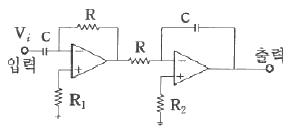
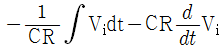
- -2V
- Vi
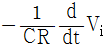
(정답률: 65%)
9. 순방향 바이어스에 관한 설명으로 옳은 것은?
- 전위장벽을 높게 한다.
- 다수 캐리어에 의한 전류를 이 되도록 한다.
- 전위장벽을 더 낮게 한다.
- 소수 캐리어에 의한 전류를 이 되도록 한다.
(정답률: 42%)
10. 컬렉터 변조회로 중 컬렉터 동조회로의 특징이 아닌 것은?
- 조정이 비교적 어렵고, 출력이 안정적이지 못하다.
- 직선성이 대단이 우수하고, 피변조파의 컬렉터 효율이 좋다.
- 피변조파 출력이 크므로 대전력 송신기에 주로 사용된다.
- 트랜지스터의 C급 바이어스 동작에 의해서 100%까지 변조할 수 있지만 큰 변조전력이 요구되는 단점이 있다.
(정답률: 56%)
11. 그림과 같은 논리소자의 출력을 나타내는 식은?
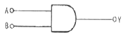
- Y = A ㆍ B
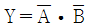
- Y = A + B
- Y = A - B
(정답률: 70%)
12. 그림과 같은 논리회로와 등가적으로 동작하는 스위치는?
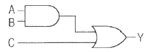
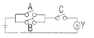
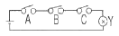
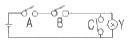
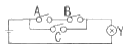
(정답률: 77%)
13. 진폭변조에 관한 설명으로 옳은 것은?
- 주파수는 일정하고 위상이 변하는 것이다.
- 주파수는 일정하고 진폭이 변하는 것이다.
- 진폭은 일정하고 반송파의 위상이 변하는 것이다.
- 진폭은 일정하고 반송파의 주파수가 변하는 것이다.
(정답률: 73%)
14. R-C 회로에서 시정수를 올바르게 표현한 것은?
- RL
- C/R
- R/C
- RC
(정답률: 71%)
15. 시프트 레지스터의 출력을 입력측에 되먹임으로서 클럭펄스가 가해질 경우 레지스터 내부의 2진 값이 순환하도록 만든 카운터는?
- 동기 카운터
- 인코더 카운터
- 링 카운터
- 디코더 카운터
(정답률: 70%)
16. 다음 중 압진 효과를 이용한 발진기는?
- 음차 발진기
- 콜피츠 발진기
- 수정 발진기
- L-C 발진기
(정답률: 69%)
17. 초기 속도가 0인 전자를 100V의 전압으로 가속시키면 전자의 속도는 몇 m/s 인가?
- 6.93 × 106
- 5.93 × 106
- 4.93 × 106
- 3.93 × 106
(정답률: 64%)
18. 25℃에서 80W의 손실전력을 가지는 실리콘 트랜지스터가 있다. 이 트랜지스터 케이스의 온도가 135℃라면 손실전력은 몇 W 인가? (단, 25℃ 이상에서 손실전력의 감소비율은 0.5 W/℃이다.)
- 20
- 25
- 30
- 35
(정답률: 64%)
19. 증폭기의 접지방식에서 가장 높은 주파수까지 증폭할 수 있는 것은?
- 베이스 접지
- 이미터 접지
- 컬렉터 접지
- 이미터 팔로워
(정답률: 67%)
20. 대부분이 RF 동조증폭기이고, 입력신호는 부(-)로 클램프 되며, 협대역 펄스의 컬렉터 전류를 발생시키는 회로는?
- A급 푸시풀
- B급 푸시풀
- C급 푸시풀
- AB급 푸시풀
(정답률: 69%)
2과목: 회로이론 및 제어공학
21. 분포정수 전송회로에 대한 설명이 아닌 것은?
 인 회로를 무왜형 회로라 한다.
인 회로를 무왜형 회로라 한다.- R=G=0 인 회로를 무손실 회로라 한다.
- 무손실 회로와 무왜형 회로의 감쇠정수는 √RG 이다.
- 무손실 회로와 무왜형 회로에서의 위상속도는
 이다.
이다.
(정답률: 67%)
22. R1=R2=100Ω이며, L1=5H 인 회로에서 시정수는 몇 sec인가?
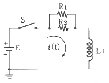
- 0.001
- 0.01
- 0.1
- 1
(정답률: 50%)
23. 다음 회로에서 절점 a와 절점 b의 전압이 같을 조건은?
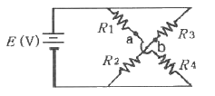
- R1R3 = R2R4
- R1R2 = R3R4
- R1 + R3 = R2 + R4
- R1 + R2 = R3 + R4
(정답률: 67%)
24. 그림과 같은 회로의 구동점 임피던스 Zab는?
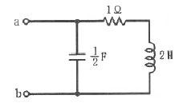
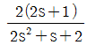
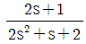
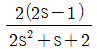
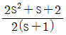
(정답률: 50%)
25. 최댓값이 10V인 정현파 전압이 있다. t=0 에서의 순시값이 5V 이고 이 순간에 전압이 증가하고 있다. 주파수가 60Hz 일 때, t = 2ms 에서의 전압의 순시값[V]은?
- 10sin30°
- 10sin43.2°
- 10sin73.2°
- 10sin103.2°
(정답률: 36%)
26. 그림과 같은 구형파의 라플라스 변환은?
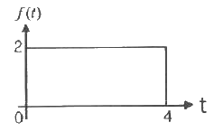
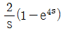
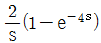
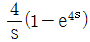
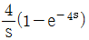
(정답률: 50%)
27. 그림과 같은 파형의 파고율은?
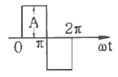
- 1
- 2
- √2
- √3
(정답률: 53%)
28. 그림과 같은 회로의 컨덕턴스 G2에 흐르는 전류 i는 몇 A 인가?
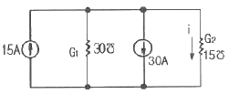
- -5
- 5
- -10
- 10
(정답률: 53%)
29. 콘덴서 C[F]에 단위 임펄스의 전류원을 접속하여 동작시키면 콘덴서의 전압 Vc(t)는? (단, u(t)는 단위계단 함수이다.)
- Vc(t) = C
- Vc(t) = Cu(t)
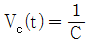
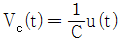
(정답률: 48%)
30. 비접지 3상 Y회로에서 전류 Ia = 15 + j2[A], Ib = -20 – j14[A] 일 경우 Ic[A] 는?
- 5 + j12
- -5 + j12
- 5 - j12
- -5 - j12
(정답률: 50%)
31.
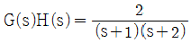
의 이득여유(dB)는?- 20
- -20
- 0
- ∞
(정답률: 61%)
32. 다음 진리표의 논리소자는?
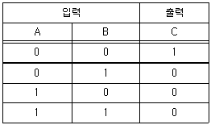
- OR
- NOR
- NOT
- NAND
(정답률: 67%)
33. 그림과 같은 신호흐름 선도에서 전달함수
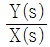
는 무엇인가?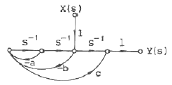
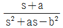
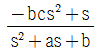
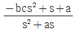
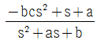
(정답률: 50%)
34. 다음과 같은 시스템에 단위계단입력 신호가 가해졌을 때 지연시간에 가장 가까운 값sec은?
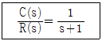
- 0.5
- 0.7
- 0.9
- 1.2
(정답률: 62%)
35. 다음 단위 궤환 제어계의 미분방정식은?
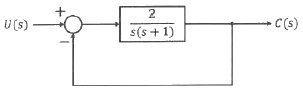
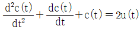
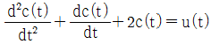
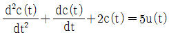
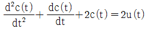
(정답률: 56%)
36. 특성방정식이 다음과 같다. 이를 변환하여 평면에 도시할 때 단위원 밖에 놓일 근은 몇 개인가?
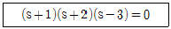
- 0
- 1
- 2
- 3
(정답률: 55%)
37. 특성방정식 s3+2s2+(k+3)s+10=0에서 Routh 안정도 판별법으로 판별 시 안정하기 위한 k의 범위는?
- k ＞ 2
- k ＜ 2
- k ＞ 1
- k ＜ 1
(정답률: 62%)
38. 드모르간의 정리를 나타낸 식은?
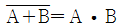
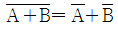
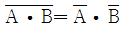
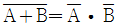
(정답률: 63%)
39. 그림에서 ①에 알맞은 신호 이름은?
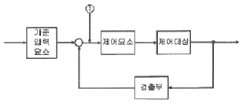
- 조작량
- 제어량
- 기준입력
- 동작신호
(정답률: 65%)
40. 근궤적이 s평면의 jω축과 교차할 때 폐루프의 제어계는?
- 안정하다.
- 알 수 없다.
- 불안정하다.
- 임계상태이다.
(정답률: 58%)
3과목: 신호기기
41. 유도전동기의 토크-속도 곡선이 비례추이를 한다는 것은 그 곡선이 무엇에 비례해서 이동하는 것을 말하는가?
- 슬립
- 회전수
- 공급전압
- 차 합성저항
(정답률: 45%)
42. 22kW, 220V 직류발전기의 전부하 전류는 몇 A 인가?
- 100
- 120
- 140
- 160
(정답률: 64%)
43. 직류궤도회로에 사용되는 한류장치는 무엇으로 사용하는가?
- 코일
- 리액터
- 콘덴서
- 가변저항기
(정답률: 69%)
44. 선로전환기의 사용력에 의한 분류가 아닌 것은?
- 수동 선로전환기
- 동력 선로전환기
- 삼지 선로전환기
- 스프링 선로전환기
(정답률: 53%)
45. 반파 정류회로에서 직류전압 100V 를 얻는데 필요한 변압기 2차 상전압은 약 몇 V 인가? (단, 부하는 순저항 부하이며, 변압기 내의 전압강하는 무시하고, 정류기 내의 전압강하는 15V 로 한다.)
- 125
- 256
- 315
- 496
(정답률: 66%)
46. 교류전기 선로전환기의 전동기 회전방향을 제어하는 기기는?
- 전철정자
- 제어계전기
- 회로제어기
- 계자권선접속기
(정답률: 59%)
47. 직류기에서 전기자반작용으로 나타나는 영향으로 틀린 것은?
- 전기적 중성축이 이동한다.
- 정류자 편간의 불꽃 섬락이 발생한다.
- 단자전압의 저하는 전동기에만 나타난다.
- 회전속도의 상승은 전동기에만 나타난다.
(정답률: 58%)
48. 건널목 경보시간의 적정화를 도모하기 위하여 사용하는 방법 중 틀린 것은?
- 시소 계전기법
- 정시간 제어기법
- 궤도회로 연장법
- 콘덴서 충·방전법
(정답률: 48%)
49. ATS 지상자 제어계전기의 접점저항은 몇 mΩ 이하이어야 하는가?
- 60
- 80
- 100
- 120
(정답률: 50%)
50. 변압기의 누설리액턴스를 줄이는데 가장 효과적인 방법은?
- 권선을 동심 배치한다.
- 권선을 분할하여 조립한다.
- 철심의 단면적을 크게 한다.
- 코일의 단면적을 크게 한다.
(정답률: 60%)
51. 궤도회로용 구성기기가 아닌 것은?
- 전원장치
- 한류장치
- 철관장치
- 궤조절연
(정답률: 67%)
52. 자기유지계전기(WR)의 접점 수, 전류, 정격 동작 전압에 대한 사항 중 옳은 것은?
- NR4/N4R4, 80mA, DC 22V
- NR4/N2R2, 80mA, DC 24V
- NR4/N4R4, 120mA, DC 22V
- NR4/N4R4, 120mA, DC 24V
(정답률: 62%)
53. 열차 최고운행속도가 150km/h 인 선로의 건널목에 경보제어용 시점제어자를 설치하고자 한다. 건널목 종점제어자와의 이격거리는 몇 m 인가? (단, 기준경보시간은 30초로 한다.)
- 950
- 1⑤0
- 1150
- 1250
(정답률: 53%)
54. 3상 유도전동기에서 동기와트로 표시되는 것은?
- 토크
- 1차 입력
- 2차 출력
- 동기 각속도
(정답률: 65%)
55. %저항 강하가 3%, 리액턴스 강하가 4%일 때 변압기의 최대 전압변동률은 몇 % 인가?
- 3
- 4
- 5
- 6
(정답률: 67%)
56. 열차집중제어장치(CTC)의 효과가 아닌 것은?
- 안전도 향상
- 선로용량의 증대
- 정보수집의 비자동화
- 신호보안장치의 고장파악 용이
(정답률: 56%)
57. 부하가 변하면 심하게 속도가 변하는 직류 전동기는?
- 직권전동기
- 분권전동기
- 차동복권전동기
- 가동복권전동기
(정답률: 58%)
58. 변압기의 자속을 만드는 전류는?
- 부하전류
- 철손전류
- 자화전류
- 포화전류
(정답률: 57%)
59. 콘덴서 기동형 단상유도전동기가 사용되는 기기는?
- 전동차단기
- 침목형 선로전환기
- MJ81형 선로전환기
- NS형 전기 선로전환기
(정답률: 61%)
60. 직류전동기의 속도제어법이 아닌 것은?
- 계자제어법
- 전압제어법
- 저항제어법
- 전류제어법
(정답률: 63%)
4과목: 신호공학
61. 경부고속철도 UM71 궤도회로장치 구성기기 중 현장 선로변에 설치되어 있는 기기가 아닌 것은?
- 궤도회로수신기
- MU(matching Unit)
- 보상용콘덴서
- 양극자블록장치(DB)
(정답률: 59%)
62. 4현시 자동구간에서 정거장 본선에 정지하는 경우 장내신호기의 현시상태는? (단, 복선자동폐색구간)(오류 신고가 접수된 문제입니다. 반드시 정답과 해설을 확인하시기 바랍니다.)
- YY
- R0
- 제한
- G
(정답률: 48%)
63. 자동폐색장치에 대한 설명으로 틀린 것은?
- 복선구간의 신호현시는 정지 정위식을 원칙으로 한다.
- 폐색구간의 열차검지는 궤도회로 및 악셀 카운터 등을 설비하여 검지하는 것으로 한다.
- 신호현시 제어는 주파수를 이용한 제어방식 또는 전자제어방식으로 한다.
- 폐색구간에 설비하는 궤도회로는 무절연 방식의 궤도회로를 설치한다.
(정답률: 48%)
64. 선로전환기 정위 결정법에 대한 설명으로 틀린 것은?
- 본선과 본선 또는 측선과 측선의 경우 주요 본선(측선) 방향
- 단선의 경우 상·하 본선은 열차 진입방향
- 탈선 선로전환기는 탈선시키는 방향
- 본선이 안전측선과 분기하는 경우에는 본선의 방향
(정답률: 50%)
65. 경부고속철도(KTX)에 설치된 전자연동장치(SSI)의 큐비클 내 구성기기가 아닌 것은?
- 불연속전송모듈(CEP)
- 진단모듈(DIA)
- 다중처리모듈(MPM)
- 조작표시반 처리모듈(PPM)
(정답률: 55%)
66. 단선구간 상·하 장내신호기에 진행신호를 동시에 현시할 수 없도록 하는 쇄정은?
- 편쇄정
- 정위쇄정
- 정·반위쇄정
- 반위쇄정
(정답률: 60%)
67. 대용폐색방식에 해당하지 않는 것은?
- 통신식
- 지도 통신식
- 지도식
- 지도 격시법
(정답률: 59%)
68. 전철 제어 계전기의 전원이 차단되면?
- WR낙하
- 0° 접점을 유지한다.
- 반대 방향으로 동작한다.
- 동작된 방향으로 지속한다.
(정답률: 59%)
69. 고속철도 지장물검지장치에 대한 설명으로 거리가 먼 것은?
- 낙석검지용 보조 접속함(SDC)은 검지망의 시점 기주에 설치한다.
- 검지선 간의 간격은 150~300mm로 한다.
- 보호해제버튼(CAPT)은 지장물검지장치그룹의 시단부에 설치한다.
- 검지선이 단락되면 계전기가 무여자되어 이상정보가 제공되어야 한다.
(정답률: 58%)
70. 전기회로가 개방되어 계전기에 전류가 흐르지 않다가 열차가 궤도에 진입함으로써 차축을 통하여 전류가 흘러 궤도계전기가 여자하는 궤도회로는?
- 폐전로식 궤도회로
- 개전로식 궤도회로
- 2위식 궤도회로
- 3위식 궤도회로
(정답률: 55%)
71. 교류 궤도회로의 단락감도 향상을 위한 방법으로 틀린 것은?
- 레일을 용접, 장대 레일화 하여 전압강하를 없앤다.
- 송전전압을 증가하고, 한류장치의 저항 또는 리액터를 증가한다.
- 궤도계전기에 병렬로 저항을 삽입하고, 반위접점으로 단락한다.
- 위상을 적당히 하여 열차 단락시의 회전역률을 최대 회전역률에서 이동시킨다.
(정답률: 50%)
72. 고속철도를 횡단하는 고가차도나 낙석 또는 토사붕괴가 우려되는 지역 등에 자동차나 낙석 등이 선로에 침입하는 것을 검지하여 사고를 예방하기 위한 장치는?
- 축소검지장치
- 지장물검지장치
- 끌림검지장치
- 안전스위치
(정답률: 65%)
73. 신호검측차로 측정할 수 없는 것은?
- AF궤도회로의 반송파전류
- 임펄스 궤도회로의 전압
- ATS장치의 선택도
- 건널목 장치의 조명의 밝기
(정답률: 60%)
74. 전기 선로전환기의 동작순서로 옳은 것은?
- 표시 → 전환 → 해정 → 쇄정
- 해정 → 전환 → 표시 → 쇄정
- 해정 → 전환 → 쇄정 → 표시
- 표시 → 해정 → 전환 → 쇄정
(정답률: 60%)
75. ATS지상자 설치에 대한 설명으로 틀린 것은?
- 지상자만을 설치할 경우에는 리드선이 붙은 상태로 단락되지 않도록 처리한다.
- 점제어식 지상자의 설치거리는 신호기 바깥쪽으로부터 열차 제동거리의 1.2배 범위로 한다.
- 지상자 밑면과 자갈과의 간격은 20mm이상으로 한다.
- 가드레일과의 간격은 400mm이상으로 한다.
(정답률: 45%)
76. 유도신호기에 대한 확인거리는 몇 m 이상인가?
- 100
- 250
- 500
- 700
(정답률: 55%)
77. 역간 열차 평균 운전시분이 7분이고 폐색 취급시분이 5분일 경우 단선구간의 선로용량은? (단, 선로이용률은 0.75임)
- 60회
- 75회
- 90회
- 120회
(정답률: 47%)
78. NS형 전기선로전환기의 동작 시분은 몇 초 이하이어야 하는가?
- 6초
- 8초
- 10초
- 12초
(정답률: 57%)
79. 역 사이에 설치된 3위식 자동폐색구간에서 항상 진행 신호로 운행하는 경우의 최소운전시격(TR)은? (단, B : 폐색구간길이[m], L : 열차길이[m], C : 신호현시 확인에 요하는 최소거리)[m], t : 선행열차가 1의 신호기를 통과할 때부터 3의 신호기가 진행신호를 현시할 때까지 시간[sec], V : 열차속도[km/h])
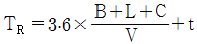
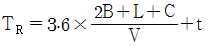
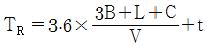
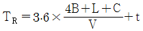
(정답률: 50%)
80. 진로선별식 전기연동장치에서 진로선별회로와 관계가 없는 것은?
- 진로조사계전기가 동작한다.
- 우행회로, 좌행회로로 분류한다.
- 전철선별계전기가 동작한다.
- 정위 배향에 진로선별계전기를 설치한다.
(정답률: 48%)